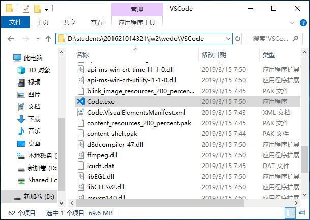

第09章 前端开发环境
辽宁师范大学 • 张大为@https://daweizh.github.io/jw2/
以nodejs作为基础支持，以vscode作为开发工具。前端框架采用Angular7，界面组件采用Ant Design（蚂蚁金服），辅助以ng-bootstrap，Element UI（饿了吗）等。
9.1 Nodejs
step1
step2
step3
step4
step5
step6
step7
step8
step9
step10
step11
step12

step13
step14
step15
step16
step17
step18
step19
step20
step21
step22
step23
step24
step25

step26
9.2 Vscode
step1

step2
step3

step4
step5
step6
step7
step8
step9
9.3 Angular
- 在VScode的命令终端状态下
- 查看nodejs的版本
node -v v10.15.1
- 查看npm的版本
npm -v 6.4.1 - 安装cnpm并注册阿里服务器
npm install -g cnpm --registry=https://registry.npm.taobao.org npm WARN deprecated socks@1.1.10: If using 2.x branch, please upgrade to at least 2.1.6 to avoid a serious bug with socket data flow and an import issue introduced in 2.1.0 D:\students\201621014321\jw2\wedo\nodejs\node_global\cnpm -> D:\students\201621014321\jw2\wedo\nodejs\node_global\node_modules\cnpm\bin\cnpm + cnpm@6.0.0 added 679 packages from 898 contributors in 162.877s
- 安装Angular脚手架
npm install -g @angular/cli D:\students\201621014321\jw2\wedo\nodejs\node_global\ng -> D:\students\201621014321\jw2\wedo\nodejs\node_global\node_modules\@angular\cli\bin\ng npm WARN optional SKIPPING OPTIONAL DEPENDENCY: fsevents@1.2.7 (node_modules\@angular\cli\node_modules\fsevents): npm WARN notsup SKIPPING OPTIONAL DEPENDENCY: Unsupported platform for fsevents@1.2.7: wanted {"os":"darwin","arch":"any"} (current: {"os":"win32","arch":"x64"}) + @angular/cli@7.3.6 added 295 packages from 180 contributors in 138.176s
- 查看Angular的版本号
ng version _ _ ____ _ ___ / \ _ __ __ _ _ _| | __ _ _ __ / ___| | |_ _| / △ \ | '_ \ / _` | | | | |/ _` | '__| | | | | | | / ___ \| | | | (_| | |_| | | (_| | | | |___| |___ | | /_/ \_\_| |_|\__, |\__,_|_|\__,_|_| \____|_____|___| |___/ Angular CLI: 7.3.6 Node: 10.15.1 OS: win32 x64 Angular: ... Package Version ------------------------------------------------------ @angular-devkit/architect 0.13.6 @angular-devkit/core 7.3.6 @angular-devkit/schematics 7.3.6 @schematics/angular 7.3.6 @schematics/update 0.13.6 rxjs 6.3.3 typescript 3.2.4 - 进入工作空间
C:\Users\dawei>d: D:\>cd students D:\students>cd .. D:\>cd students D:\students>cd 201621014321 D:\students\201621014321>cd jw2 D:\students\201621014321\jw2>cd workspace
- 创建Angular新项目webcore
D:\students\201621014321\jw2\workspace>ng new webcore ? Would you like to add Angular routing? Yes ? Which stylesheet format would you like to use? SCSS [ http://sass-lang.com/documentation/file.SASS_REFERENCE.html#syntax ] CREATE webcore/angular.json (3904 bytes) ... ... CREATE webcore/e2e/src/app.po.ts (251 bytes) > node-sass@4.11.0 install D:\students\201621014321\jw2\workspace\webcore\node_modules\node-sass > node scripts/install.js Cached binary found at F:\zdw-0-ide\wedo\nodejs\node_cache\node-sass\4.11.0\win32-x64-64_binding.node > node-sass@4.11.0 postinstall D:\students\201621014321\jw2\workspace\webcore\node_modules\node-sass > node scripts/build.js Binary found at D:\students\201621014321\jw2\workspace\webcore\node_modules\node-sass\vendor\win32-x64-64\binding.node Testing binary Binary is fine npm WARN optional SKIPPING OPTIONAL DEPENDENCY: fsevents@1.2.7 (node_modules\fsevents): npm WARN notsup SKIPPING OPTIONAL DEPENDENCY: Unsupported platform for fsevents@1.2.7: wanted {"os":"darwin","arch":"any"} (current: {"os":"win32","arch":"x64"}) added 1074 packages from 1028 contributors and audited 42608 packages in 375.722s found 0 vulnerabilities warning: LF will be replaced by CRLF in .editorconfig. The file will have its original line endings in your working directory ... ... warning: LF will be replaced by CRLF in tslint.json. The file will have its original line endings in your working directory Successfully initialized git.
- 进入项目空间
D:\students\201621014321\jw2\workspace>cd webcore - 启动Angular项目
D:\students\201621014321\jw2\workspace\webcore>ng serve --open ** Angular Live Development Server is listening on localhost:4200, open your browser on http://localhost:4200/ ** Date: 2019-03-22T00:43:33.714Z Hash: 3c10aa98166a824e1dd2 Time: 15165ms chunk {es2015-polyfills} es2015-polyfills.js, es2015-polyfills.js.map (es2015-polyfills) 284 kB [initial] [rendered] chunk {main} main.js, main.js.map (main) 11.5 kB [initial] [rendered] chunk {polyfills} polyfills.js, polyfills.js.map (polyfills) 236 kB [initial] [rendered] chunk {runtime} runtime.js, runtime.js.map (runtime) 6.08 kB [entry] [rendered] chunk {styles} styles.js, styles.js.map (styles) 16.7 kB [initial] [rendered] chunk {vendor} vendor.js, vendor.js.map (vendor) 3.76 MB [initial] [rendered] i ｢wdm｣: Compiled successfully.
- 添加项目到Vscode
- 查看生成初始页面的文件内容
- 保存工作空间
9.4 安装UI框架
- 终止Angular服务器
Ctrl + c ^C终止批处理操作吗(Y/N)? y
- 安装antd
D:\students\201621014321\jw2\workspace\webcore>ng add ng-zorro-antd Installing packages for tooling via npm. ... ... + ng-zorro-antd@7.2.0 added 7 packages from 5 contributors and audited 42617 packages in 54.925s found 0 vulnerabilities Installed packages for tooling via npm. ? Add icon assets [ Detail: https://ng.ant.design/components/icon/en ] Yes ? Set up custom theme file [ Detail: https://ng.ant.design/docs/customize-theme/en ] Yes ? Choose your locale code: zh_CN ... ...
- 启动angular服务器
D:\students\201621014321\jw2\workspace\webcore>ng serve --open - 终止Angular服务器
Ctrl + c ^C终止批处理操作吗(Y/N)? y
- 安装bootstrap
D:\students\201621014321\jw2\workspace\webcore>npm install --save bootstrap ... ... + bootstrap@4.3.1 added 1 package from 2 contributors in 36.316s
- 安装ng-bootstrap
D:\students\201621014321\jw2\workspace\webcore>npm install --save @ng-bootstrap/ng-bootstrap ... + @ng-bootstrap/ng-bootstrap@4.1.1 added 1 package from 1 contributor and audited 42619 packages in 29.926s found 0 vulnerabilities
- 在src目录下的styles.scss文件中添加如下内容
@import '../node_modules/bootstrap/scss/bootstrap';
- 在src的app目录下， 找得到app.module.ts类中引用NgbModule
import {NgbModule} from '@ng-bootstrap/ng-bootstrap';
在imports里新增 NgbModuleimport { BrowserModule } from '@angular/platform-browser'; import { NgModule } from '@angular/core'; import { AppRoutingModule } from './app-routing.module'; import { AppComponent } from './app.component'; import { NgZorroAntdModule, NZ_I18N, zh_CN } from 'ng-zorro-antd'; import { FormsModule } from '@angular/forms'; import { HttpClientModule } from '@angular/common/http'; import { BrowserAnimationsModule } from '@angular/platform-browser/animations'; import { registerLocaleData } from '@angular/common'; import zh from '@angular/common/locales/zh'; import {NgbModule} from '@ng-bootstrap/ng-bootstrap'; registerLocaleData(zh); @NgModule({ declarations: [ AppComponent ], imports: [ NgbModule, BrowserModule, AppRoutingModule, NgZorroAntdModule, FormsModule, HttpClientModule, BrowserAnimationsModule ], providers: [{ provide: NZ_I18N, useValue: zh_CN }], bootstrap: [AppComponent] }) export class AppModule { }
- 在app.component.html中加入如下语句
<p> <ngb-alert [dismissible]="false"> <strong>Warning!</strong> Better check yourself, you're not looking too good. </ngb-alert> </p>
- 启动angular服务器
D:\students\201621014321\jw2\workspace\webcore>ng serve --open - 终止Angular服务器
Ctrl + c ^C终止批处理操作吗(Y/N)? y
- 安装Element UI
D:\students\201621014321\jw2\workspace\webcore>npm install --save element-angular ... ... + element-angular@0.7.6 added 1 package from 1 contributor in 35.93s
- 进入css到style.css
@import '../node_modules/bootstrap/scss/bootstrap'; <pre>Error: ENOENT: no such file or directory, open 'F:\~.books\jw\2020\handout\node_modules\element-angular\theme\index.css'</pre>
- 引入模块到app.module.ts
... ... import { ElModule } from 'element-angular' @NgModule({ imports: [ BrowserModule, BrowserAnimationsModule, ElModule.forRoot(), ... ], ... bootstrap: [ExAppComponent], })
- 在app.component.html中加入如下语句
<el-button>Hello Element UI</el-button>
- 启动angular服务器
D:\students\201621014321\jw2\workspace\webcore>ng serve --open - 终止Angular服务器
Ctrl + c ^C终止批处理操作吗(Y/N)? y
- 安装ngx-quill富文本编辑器
D:\students\201621014321\jw2\workspace\webcore>npm install --save quill ngx-quill ... ... + ngx-quill@4.7.0 + quill@1.3.6 added 5 packages from 2 contributors and updated 1 package in 37.466s
- 在angular.json中修改scirpts如下
"scripts": [ "node_modules/ngx-quill/bundles/ngx-quill.umd.js", "node_modules/quill/dist/quill.js" ],
- 引入Css样式到index.html
<link href="https://cdn.quilljs.com/1.0.0/quill.snow.css" rel="stylesheet">
- 引入模块到app.module.ts
... ... import { QuillModule } from 'ngx-quill' @NgModule({ imports: [ BrowserModule, BrowserAnimationsModule, ElModule, ... QuillModule ], ... bootstrap: [ExAppComponent], })
- 在app.component.html中加入如下语句
<quill-editor></quill-editor>
- 启动angular服务器
D:\students\201621014321\jw2\workspace\webcore>ng serve --open - 安装ngx-quill富文本编辑器
npm install quill ngx-guill@5.0.0 --save
- 安装angular-font-awesome
npm install --save font-awesome angular-font-awesome
- 修改angular.json引入font-awesome.scss样式文件
"styles": [ "src/theme.less", "src/styles.scss", "./node_modules/font-awesome/scss/font-awesome.scss" ],
- 修改app.module.ts引入angular-font-awesome模块
import { AngularFontAwesomeModule } from 'angular-font-awesome'; ... ... imports: [ BrowserModule, AppRoutingModule, ReactiveFormsModule, FormsModule, HttpClientModule, HttpClientJsonpModule, BrowserAnimationsModule, AngularFontAwesomeModule, NgZorroAntdModule ],